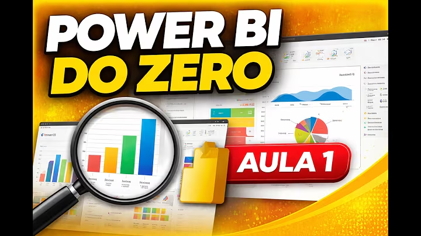

Engenharia e Dados:
Transformando o chão de fábrica
em decisões inteligentes.
Profissional com 15 anos de atuação na indústria pesada (siderurgia e alimentos). Desenvolvo soluções práticas, calculadoras operacionais e arquitetura analítica (SAP, MES, SQL, Power BI) para reduzir downtime, eliminar perdas e elevar a confiabilidade de ativos.
Gestão de Indicadores & Projetos
Manutenção & Operação
Gestão de Custos e Indicadores
Python, Power Platform e SQL
Ganhos mensuráveis e redução de perdas
Aplicações Desenvolvidas para o Chão de Fábrica
Soluções práticas executadas diretamente no navegador (100% client-side, zero latência), desenhadas para otimizar a rotina de manutenção, PCM e engenharia de confiabilidade.
Controle de Paradas & Downtime
Cálculo ágil e padronizado do tempo de parada de linha com classificação automática de severidade (Análise de Falha, FCA ou Relatório de Turno) e suporte a viradas de turno.
Calculadora de 52 Semanas (PCM)
Conversor e planejador de cronograma anual de manutenção seguindo a norma ISO 8601, com tratamento correto de anos bissextos e semanas de 53 semanas sem erros de planilha.
Gerador de Curva S & Tendência (EVM)
Gestão de Valor Agregado (EVM) para grandes paradas de manutenção e reformas de ativos. Acompanhamento gráfico em tempo real de avanço Físico e Financeiro (Planejado vs. Realizado).
Matriz FMEA Industrial & RPN
Mapeamento de Modos e Efeitos de Falha com cálculo dinâmico de RPN (Severidade × Ocorrência × Detecção), categorização de risco em cores e gráficos de Pareto para tomada de decisão.
Soluções Industriais que Geram Resultados
Projetos aplicados na mitigação de falhas mecânicas, saneamento de dados de ativos e integração corporativa com SAP, MES e Power BI.
Dashboard de Custos de Manutenção — Avine
Projeto de BI interrompido com dados descentralizados e bases espalhadas entre MySQL e planilhas Excel manuais sem governança.
Mapeamento e saneamento das bases, consolidação das regras de negócio e migração para MySQL como fonte centralizada, eliminando planilhas manuais.
Portal de Indicadores de Manutenção — ArcelorMittal
Indicadores multi-origem complexos dispersos em sistemas industriais legados (SAP, MES e SGI), demandando relatórios manuais e com baixa governança.
Padronização, modelagem dimensional e publicação de dashboards executivos em Power BI integrados diretamente para as reuniões diárias da liderança.
Aplicativo Mobile para Gestão de Manutenção em Campo (PM Mobit)
Rotinas de inspeção de equipamentos críticos e apontamentos em campo realizados manualmente em papel, gerando baixa rastreabilidade, lentidão e atrasos no controle de SLA.
Desenvolvimento de aplicação móvel corporativa em Flutter e Dart integrada ao Supabase (Auth, Database e Storage). Digitalização de checklists com evidências fotográficas, abertura automática de ordens corretivas ao detectar não conformidades, controle rigoroso de SLA e dashboard analítico de produtividade e indicadores operacionais em tempo real.
GabScan — Corretor Inteligente de Provas OMR (100% Offline-First)
Dependência de leitoras ópticas físicas caras e horas de correção manual de gabaritos no setor educacional, vulneráveis a falhas humanas e atrasos.
Aplicativo móvel que transforma o celular em scanner OMR em tempo real com custo zero de nuvem. Pipeline matemático com homografia 3×3, binarização de Otsu, paralelismo com Isolates e OCR On-Device via Google ML Kit.
Aplicativo para Cálculo da Disponibilidade dos Equipamentos — ArcelorMittal
Extração e tratamento manual recorrente de dados operacionais brutos do sistema MES para cálculo da disponibilidade dos equipamentos, gerando lentidão e sobrecarga operacional.
Desenvolvimento de pipeline automatizado para extração e tratamento dos dados do sistema MES, com interface operacional ágil em Python e relatórios com visualização em tela e exportação para Excel.
Automação em Python para Inconsistências Contábeis — ArcelorMittal
Integração e conferência manual de dados entre múltiplas planilhas Excel, com alto risco de classificações incorretas entre custos fixos e variáveis.
Desenvolvimento de script em Python integrando dados de múltiplas planilhas, com tratamento, padronização, transformação e regras automáticas de validação contábil para relatórios gerenciais.
Automação em Python para Requisições de Compra — ArcelorMittal
Divergências de centros de custo e erros de classificação em requisições de compras descobertos tardiamente, gerando retrabalho operacional e desvios contábeis.
Automação em Python integrando e validando dados de múltiplas fontes para correção proativa de desvios, associada a dashboard gerencial em Power BI para monitoramento contínuo.
Portal do Aluno · Trilha Técnica Arcade
Ambiente interativo no estilo Duolingo e fliperama retrô para alunos de cursos técnicos praticarem e se autoavaliarem na prática. Sem barreiras punitivas: o estudante foca na superação dos seus próprios recordes e recebe feedback imediato a cada questão.
Vídeos & Aulas Práticas
Canal no YouTube dedicado à análise de dados industriais, Power BI, Python, SQL e gestão da manutenção, conectando teoria à prática de fábrica por meio de aulas aplicadas de desenvolvimento de soluções.

Power BI do Zero: Dashboard de Manutenção de Frota
Construção passo a passo de um dashboard gerencial de manutenção de frotas e ordens de serviço no Power BI, calculando taxa de manutenção preventiva (28.19%), volume de OS por mês e análise detalhada por árvore de decomposição.

Power Apps: App de Gestão e Controle de Estoque
Desenvolvimento prático de um aplicativo corporativo em Power Apps para controle de estoque em tempo real, abrangendo criação de telas interativas, validações, cadastros e movimentações operacionais no chão de fábrica.
A Ponte entre o Chão de Fábrica e a Ciência de Dados
Minha carreira foi forjada no calor da operação real. Não sou apenas um analista que olha planilhas: conheço o funcionamento mecânico dos equipamentos, o impacto das paradas e como transformar dados dispersos em decisões estratégicas.
Fundação Técnica no Chão de Fábrica
Início da vivência direta com manutenção mecânica, montagem e desmontagem de redutores, alinhamento a laser, bombas, esteiras e paradas operacionais. Onde aprendi a sentir a operação e o impacto humano e financeiro de um equipamento quebrado.
Siderurgia & Engenharia de Confiabilidade
Atuação na indústria siderúrgica de alta complexidade (Gerdau). Liderança em confiabilidade, análise de causa raiz (RCA/RCFA), implementação de FMEA, planos de manutenção preventiva/preditiva e gestão de sobressalentes críticos no SAP.
Inteligência de Dados, Consultoria & Docência
Consultoria especializada em dados operacionais (Avine), saneamento de bancos relacionais (MySQL/PostgreSQL), modelagem dimensional Star Schema, dashboards corporativos em Power BI e formação de novos técnicos como docente.
Procurando o histórico formal detalhado para recrutamento?
Acesse a página de currículo com a linha do tempo completa de 15 anos de cargos, atribuições e formações.
Vamos construir soluções inteligentes para a sua operação?
Tem um desafio de paradas não programadas, saneamento de dados ou necessidade de dashboards gerenciais de alto impacto? Preencha as informações abaixo ou conecte-se diretamente através das minhas redes profissionais.